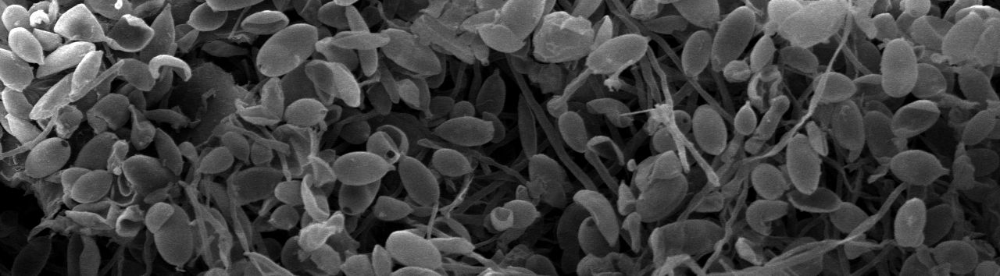
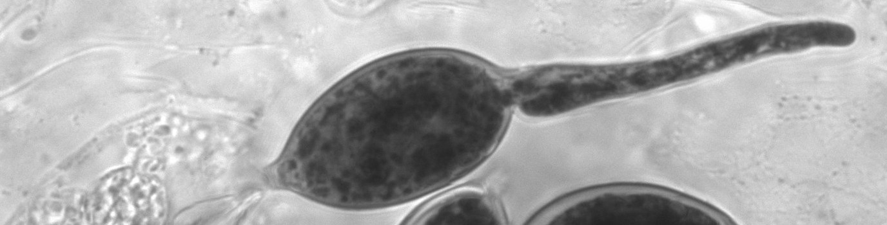

Danies, G., Myers, K., Mideros, M. F., Restrepo, S., Martin, F. N., Cooke, D. E. L., … Fry, W. E. (2014). An ephemeral sexual population of Phytophthora infestans in the Northeastern United States and Canada. PLoS ONE, 9(12), e116354. https://doi.org/10.1371/journal.pone.0116354
Martin, M. D., Cappellini, E., Samaniego, J. A., Zepeda, M. L., Campos, P. F., Seguin-Orlando, A., … Gilbert, M. T. P. (2013). Reconstructing genome evolution in historic samples of the Irish potato famine pathogen. Nature Communications, 4. https://doi.org/10.1038/ncomms3172
Schumann, G. L., & D’Arcy, C. J. (2000). Late blight of potato and tomato. The Plant Health Instructor. https://doi.org/10.1094/PHI-I-2000-0724-01
Schumann, G. L., & D’Arcy, C. J. (2012). CHAPTER 1: The Irish Potato Famine: The Birth of Plant Pathology. In Hungry Planet: Stories of Plant Diseases (Vol. 1, pp. 1–19). The American Phytopathological Society. https://doi.org/10.1094/9780890544907.001